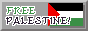
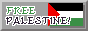
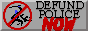
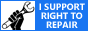
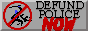
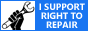

welcome.
This site was very recently rehauled and some links may not work. Please pardon my dust.
This site functions as a personal archive for my works, thoughts, opinions, and is essentially a living creative journal.
I sometimes post brain dumps which can range from thoughts on research, video game and book reviews, to just random stuff I came up with.
I can also be found on BlueSky and Tumblr. I sporadically post on the fediverse.
new entries
~Past diary entries can be seen here.
recently.
- Life: Just bought my first car and am working on a few different fanfics.
- Read: Seraphina by Rachel Hartman
- Played: Fields of Mistria
- Watched: Severance season 1
- Listened: レイン / 鏡音リン by ごめんなさいが言えなくての音楽
site updates.
February 22nd, 2025: Fixed some stray broken links, added a guestbook, and updated the site's stylesheet to be simpler.
February 9th, 2025: Fixed a few broken links.
November 15th, 2024: Site overhaul as I outgrew RStudio. While in this transitional period, the design of my site is heavily inspired by Midnight Reading, EGGRAMEN, and the general appearance of Zonelets blogs. I hope they don't mind...
~Past updates can be seen here.
 


 


